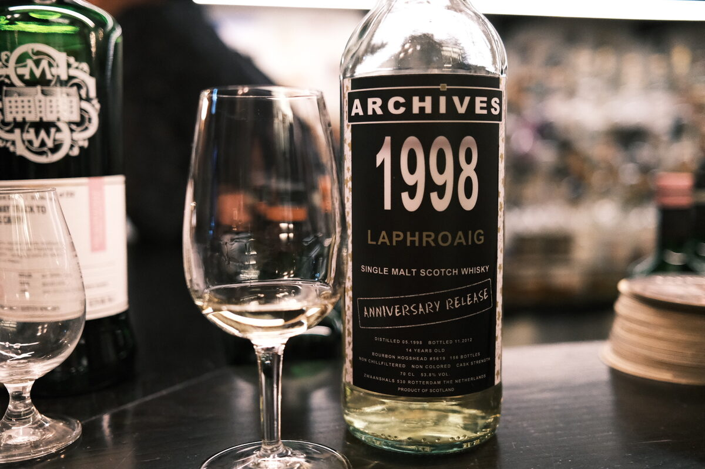

Laphroaig 1998 Archives 14 years 53.8% (bourbon hogshead)
Just in case you (or your bespectacled great-grandmother) were wondering as to the vintage, a 1998 is printed on the bottle in size one billion. Oh, and something about an anniversary release?
Colour Light gold.
Nose Medicinal. Herbal and earthy. Menthol and eucalyptus – gum leaves. Lemon juice and lemon peel. Grass. Strawberries and cloves. Water brings out the floral, grassy notes. With time, kind of nutty.
Palate Vegetal peat. Coastal, briny, salty, seaweed. Bitter oak, band-aids, plastic. Smoke. Really oily, chalky mouthfeel. Malty, a bright lemon burst. Bitter roots. With time, salted caramel and chocolate.
Finish Big smoke and vegetal peat. Oily and a little bit of fruity sweetness… grilled apricots. Burning eucalyptus, Teatree oil. Moderate length but the smoke persists, per usual.
Comments Medicinal, essential-oily Froggy. All natural. 86/100.

Posted by Dominic on 14 Jun 2021